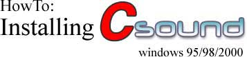
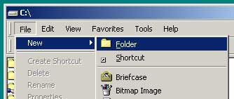
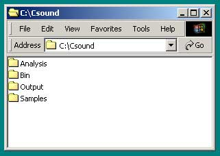
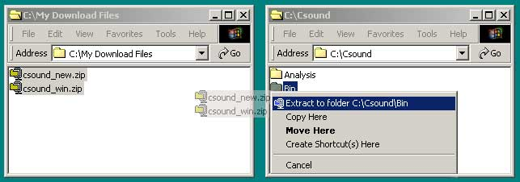
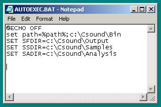
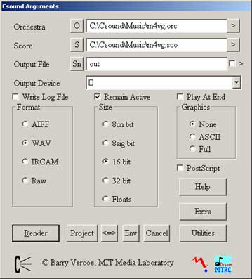

Assembled by: Jake Joaquin
1) Download the following files from Bath University:
csound_new.zip
csound_win.zip
2) Create a new folder in c:\ by selecting "File-New-Folder".

3) Rename New Folder to Csound.
4) Create 4 new folders in the Csound folder. Rename them to Analysis, Bin, Output and Samples.

5) Extract csound_new.zip and csound_win.zip to c:\Csound\Bin\.
- Select the files, hold down the RIGHT button of your mouse and drag the files onto the Bin folder. Choose "Extract to C:\Csound\Bin\".
- You will need a utility such as Winzip installed on your system in order for this to work.

6) Copy and Paste the following information into your AUTOEXEC.BAT.
@ECHO OFF
set path=%path%;c:\Csound\Bin
SET SFDIR=c:\Csound\Output
SET SSDIR=c:\Csound\Samples
SET SADIR=c:\Csound\Analysis
- The AUTOEXEC.BAT file is located in your root folder (usually c:\). You can open this file by RIGHT-clicking AUTOEXEC.BAT and selecting "Edit".

7) Reboot your computer.
8) Run Csound by double clicking winsound.exe.
- winsound.exe is located in c:\Csound\Bin\.
9) Select an .orc and .sco file to render. Click "Render" to compile a sound.
- You can download Csound compositions here.
